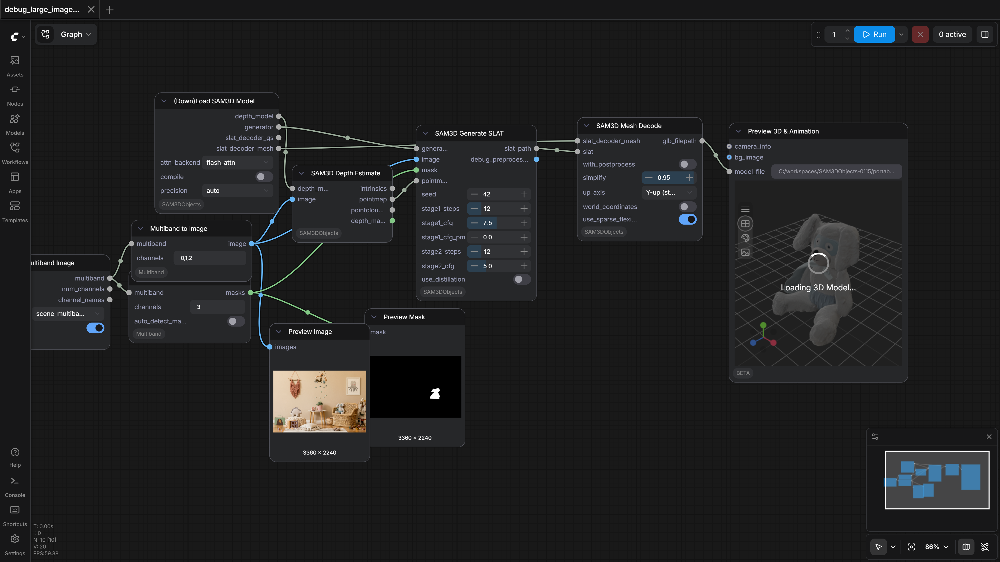
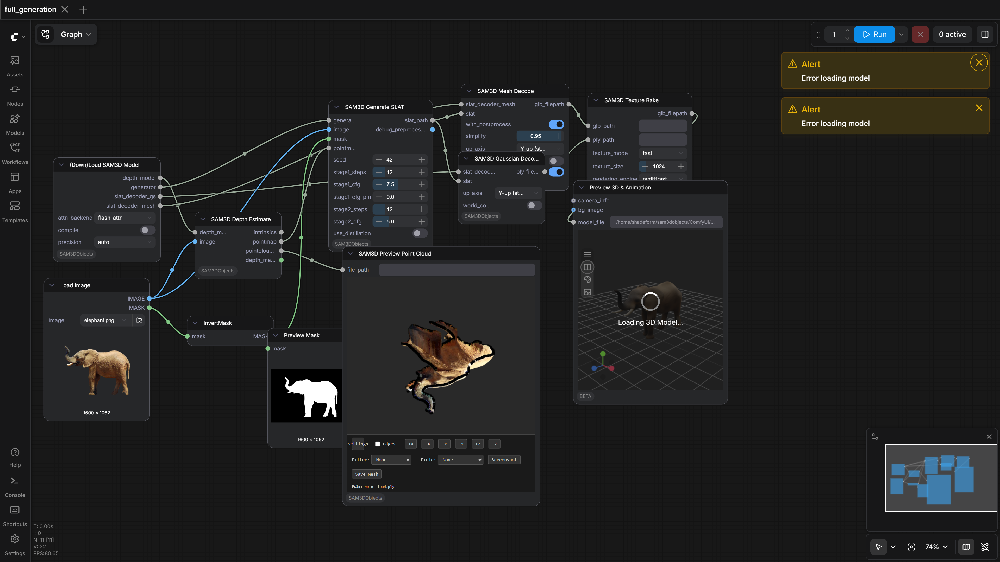
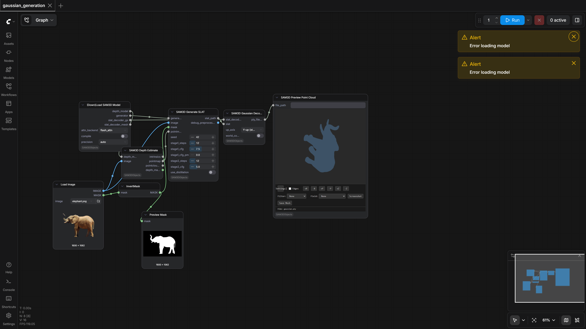

80.0%
4 passed
1 failed
4/5 tests
Workflows

debug_large_image_results
pass

full_generation
pass

gaussian_generation
pass

mesh_generation
pass
No screenshot
scene_generation
fail
Failed Tests
scene_generation
168.13s
Workflow execution failed: {'prompt_id': '0876f9d7-08b3-4dc2-9e6d-2c700559d4e6', 'node_id': '80', 'node_type': 'SAM3DSceneGenerate', 'executed': ['59', '74', '78', '75', '77', '99'], 'exception_message': "ComfyUI-SAM3DObjects: Socket closed but worker process still running.\n exit code: None\n worker log (C:\\Users\\ContainerAdministrator\\AppData\\Local\\Temp\\comfy_worker_debug.log, last 20 lines):\n 01:46:58 [worker] Post-shim registered 'SparseStructureDecoderTdfyWrapper_14': 0.15 GB\n 01:46:58 [print] [VRAM] Stage1: after load_models_gpu: torch=21295MiB alloc, 21312MiB reserved | gpu=23016MiB/24575MiB used\n 01:46:58 [print] [DTYPE_DBG] run_stage1: set ss_generator._compute_dtype=torch.bfloat16\n 01:46:58 [print] [VRAM] Stage1: before inference: torch=21295MiB alloc, 21312MiB reserved | gpu=23016MiB/24575MiB used\n 01:46:58 [print] [DTYPE_DBG] run_stage1: cast embedder inputs to torch.bfloat16\n 01:46:59 [print] [DTYPE_DBG] run_stage1: cast condition_args to torch.bfloat16, types=['Tensor'], dtypes=[torch.bfloat16]\n 01:46:59 [print] [DTYPE_DBG] _generate_noise_tensor: _compute_dtype=torch.bfloat16 shape=(1, 1, 6) device=cuda:0\n 01:46:59 [print] [DTYPE_DBG] _generate_noise_tensor: _compute_dtype=torch.bfloat16 shape=(1, 1, 3) device=cuda:0\n 01:46:59 [print] [DTYPE_DBG] _generate_noise_tensor: _compute_dtype=torch.bfloat16 shape=(1, 4096, 8) device=cuda:0\n 01:46:59 [print] [DTYPE_DBG] _generate_noise_tensor: _compute_dtype=torch.bfloat16 shape=(1, 1, 3) device=cuda:0\n 01:46:59 [print] [DTYPE_DBG] _generate_noise_tensor: _compute_dtype=torch.bfloat16 shape=(1, 1, 1) device=cuda:0\n 01:46:59 [VRAM] +227MB (now 21523MB) reserved=22400MB peak=21523MB\n 01:47:08 [print] [VRAM] Stage1: after inference: torch=21381MiB alloc, 21856MiB reserved | gpu=23560MiB/24575MiB used\n 01:47:09 [VRAM] -1461MB (now 20062MB) reserved=20256MB peak=21606MB\n 01:47:10 [print] [VRAM] Stage1: before loading models: torch=20077MiB alloc, 20256MiB reserved | gpu=21960MiB/24575MiB used\n 01:47:10 [print] [VRAM] _load_generator(ss): before build: torch=20077MiB alloc, 20256MiB reserved | gpu=21960MiB/24575MiB used\n 01:47:10 [print] [VRAM] _load_generator(ss): after load_state_dict: torch=20077MiB alloc, 20256MiB reserved | gpu=21960MiB/24575MiB used\n 01:47:10 [print] [VRAM] _load_decoder(ss): before instantiate: torch=20077MiB alloc, 20256MiB reserved | gpu=21960MiB/24575MiB used\n 01:47:10 [print] [VRAM] _load_decoder(ss): after load_state_dict: torch=20077MiB alloc, 20256MiB reserved | gpu=21960MiB/24575MiB used\n 01:47:10 [print] [VRAM] _load_condition_embedder(ss): before build: torch=20077MiB alloc, 20256MiB reserved | gpu=21960MiB/24575MiB used\n", 'exception_type': 'RuntimeError', 'traceback': [' File "C:\\workspaces\\SAM3DObjects-0115\\portable-comfyui\\ComfyUI_windows_portable\\ComfyUI\\execution.py", line 534, in execute\n output_data, output_ui, has_subgraph, has_pending_tasks = await get_output_data(prompt_id, unique_id, obj, input_data_all, execution_block_cb=execution_block_cb, pre_execute_cb=pre_execute_cb, v3_data=v3_data)\n ^^^^^^^^^^^^^^^^^^^^^^^^^^^^^^^^^^^^^^^^^^^^^^^^^^^^^^^^^^^^^^^^^^^^^^^^^^^^^^^^^^^^^^^^^^^^^^^^^^^^^^^^^^^^^^^^^^^^^^^^^^^^^^^^^^^^^^^^^^^^^^^^^^^^^^^\n', ' File "C:\\workspaces\\SAM3DObjects-0115\\portable-comfyui\\ComfyUI_windows_portable\\ComfyUI\\execution.py", line 334, in get_output_data\n return_values = await _async_map_node_over_list(prompt_id, unique_id, obj, input_data_all, obj.FUNCTION, allow_interrupt=True, execution_block_cb=execution_block_cb, pre_execute_cb=pre_execute_cb, v3_data=v3_data)\n ^^^^^^^^^^^^^^^^^^^^^^^^^^^^^^^^^^^^^^^^^^^^^^^^^^^^^^^^^^^^^^^^^^^^^^^^^^^^^^^^^^^^^^^^^^^^^^^^^^^^^^^^^^^^^^^^^^^^^^^^^^^^^^^^^^^^^^^^^^^^^^^^^^^^^^^^^^^^^^^^^^^^^^^^^^^^^^^^^^^^^^^^^^^^^^^^^^^^^\n', ' File "C:\\workspaces\\SAM3DObjects-0115\\portable-comfyui\\ComfyUI_windows_portable\\ComfyUI\\execution.py", line 308, in _async_map_node_over_list\n await process_inputs(input_dict, i)\n', ' File "C:\\workspaces\\SAM3DObjects-0115\\portable-comfyui\\ComfyUI_windows_portable\\ComfyUI\\execution.py", line 296, in process_inputs\n result = f(**inputs)\n', ' File "C:\\workspaces\\SAM3DObjects-0115\\portable-comfyui\\ComfyUI_windows_portable\\python_embeded\\Lib\\site-packages\\comfy_env\\isolation\\metadata.py", line 528, in proxy\n result = worker.call_method(\n module_name=mod,\n ...<4 lines>...\n timeout=600.0,\n )\n', ' File "C:\\workspaces\\SAM3DObjects-0115\\portable-comfyui\\ComfyUI_windows_portable\\python_embeded\\Lib\\site-packages\\comfy_env\\isolation\\workers\\subprocess.py", line 3511, in call_method\n response = self._send_request(request, timeout)\n', ' File "C:\\workspaces\\SAM3DObjects-0115\\portable-comfyui\\ComfyUI_windows_portable\\python_embeded\\Lib\\site-packages\\comfy_env\\isolation\\workers\\subprocess.py", line 3431, in _send_request\n raise RuntimeError(\n f"{self.name}: Socket closed but worker process still running.\\n{diag}"\n ) from e\n'], 'current_inputs': {'seed': [42], 'stage1_steps': [12], 'stage1_cfg': [7.5], 'stage1_cfg_pm': [0], 'stage2_steps': [12], 'stage2_cfg': [5], 'with_postprocess': [False], 'simplify': [0.95], 'add_textures': [False], 'texture_mode': ['fast'], 'texture_size': [1024], 'stage1_batch_size': [1], 'generator': ["{'config_path': 'C:\\\\workspaces\\\\SAM3DObjects-0115\\\\portable-comfyui\\\\ComfyUI_windows_portable\\\\ComfyUI\\\\models\\\\sam3dobjects\\\\pipeline.yaml', 'compile': True, 'precision': 'bf16'}"], 'slat_decoder_gs': ["{'config_path': 'C:\\\\workspaces\\\\SAM3DObjects-0115\\\\portable-comfyui\\\\ComfyUI_windows_portable\\\\ComfyUI\\\\models\\\\sam3dobjects\\\\pipeline.yaml', 'compile': True, 'precision': 'bf16'}"], 'slat_decoder_mesh': ["{'config_path': 'C:\\\\workspaces\\\\SAM3DObjects-0115\\\\portable-comfyui\\\\ComfyUI_windows_portable\\\\ComfyUI\\\\models\\\\sam3dobjects\\\\pipeline.yaml', 'compile': True, 'precision': 'bf16'}"], 'image': ['tensor([[[[0.9175, 0.8394, 0.7334],\n [0.9175, 0.8354, 0.7295],\n [0.9253, 0.8433, 0.7373],\n ...,\n [0.8037, 0.6587, 0.4863],\n [0.8076, 0.6626, 0.4902],\n [0.0000, 0.0000, 0.0000]],\n\n [[0.9136, 0.8315, 0.7256],\n [0.9175, 0.8354, 0.7295],\n [0.9175, 0.8354, 0.7295],\n ...,\n [0.7959, 0.6509, 0.4785],\n [0.8076, 0.6626, 0.4902],\n [0.0000, 0.0000, 0.0000]],\n\n [[0.9214, 0.8276, 0.7178],\n [0.9253, 0.8433, 0.7373],\n [0.9175, 0.8354, 0.7295],\n ...,\n [0.7920, 0.6470, 0.4746],\n [0.8076, 0.6626, 0.4902],\n [0.0000, 0.0000, 0.0000]],\n\n ...,\n\n [[0.8745, 0.6860, 0.4980],\n [0.8745, 0.6860, 0.4980],\n [0.8667, 0.6782, 0.4902],\n ...,\n [0.6392, 0.4353, 0.2471],\n [0.6431, 0.4392, 0.2510],\n [0.0000, 0.0000, 0.0000]],\n\n [[0.8667, 0.6782, 0.4902],\n [0.8706, 0.6821, 0.4941],\n [0.8706, 0.6821, 0.4941],\n ...,\n [0.6431, 0.4392, 0.2510],\n [0.6470, 0.4431, 0.2549],\n [0.0000, 0.0000, 0.0000]],\n\n [[0.8628, 0.6743, 0.4863],\n [0.8784, 0.6904, 0.5020],\n [0.8784, 0.6904, 0.5020],\n ...,\n [0.6431, 0.4392, 0.2510],\n [0.6353, 0.4314, 0.2432],\n [0.0000, 0.0000, 0.0000]]]])'], 'masks': ['tensor([[[0., 0., 0., ..., 0., 0., 0.],\n [0., 0., 0., ..., 0., 0., 0.],\n [0., 0., 0., ..., 0., 0., 0.],\n ...,\n [0., 0., 0., ..., 0., 0., 0.],\n [0., 0., 0., ..., 0., 0., 0.],\n [0., 0., 0., ..., 0., 0., 0.]],\n\n [[0., 0., 0., ..., 0., 0., 0.],\n [0., 0., 0., ..., 0., 0., 0.],\n [0., 0., 0., ..., 0., 0., 0.],\n ...,\n [0., 0., 0., ..., 0., 0., 0.],\n [0., 0., 0., ..., 0., 0., 0.],\n [0., 0., 0., ..., 0., 0., 0.]],\n\n [[0., 0., 0., ..., 0., 0., 0.],\n [0., 0., 0., ..., 0., 0., 0.],\n [0., 0., 0., ..., 0., 0., 0.],\n ...,\n [0., 0., 0., ..., 0., 0., 0.],\n [0., 0., 0., ..., 0., 0., 0.],\n [0., 0., 0., ..., 0., 0., 0.]],\n\n ...,\n\n [[0., 0., 0., ..., 0., 0., 0.],\n [0., 0., 0., ..., 0., 0., 0.],\n [0., 0., 0., ..., 0., 0., 0.],\n ...,\n [0., 0., 0., ..., 0., 0., 0.],\n [0., 0., 0., ..., 0., 0., 0.],\n [0., 0., 0., ..., 0., 0., 0.]],\n\n [[0., 0., 0., ..., 0., 0., 0.],\n [0., 0., 0., ..., 0., 0., 0.],\n [0., 0., 0., ..., 0., 0., 0.],\n ...,\n [0., 0., 0., ..., 0., 0., 0.],\n [0., 0., 0., ..., 0., 0., 0.],\n [0., 0., 0., ..., 0., 0., 0.]],\n\n [[0., 0., 0., ..., 0., 0., 0.],\n [0., 0., 0., ..., 0., 0., 0.],\n [0., 0., 0., ..., 0., 0., 0.],\n ...,\n [0., 0., 0., ..., 0., 0., 0.],\n [0., 0., 0., ..., 0., 0., 0.],\n [0., 0., 0., ..., 0., 0., 0.]]])'], 'intrinsics': ['[[1.1264718 0. 0.5 ]\n [0. 1.6897076 0.5 ]\n [0. 0. 1. ]]'], 'pointmap': ['tensor([[[ 0.9414, 0.6215, 2.0998],\n [ 0.9414, 0.6215, 2.0998],\n [ 0.9404, 0.6215, 2.0998],\n ...,\n [-0.9150, 0.6078, 2.0490],\n [-0.9161, 0.6083, 2.0490],\n [-0.9161, 0.6083, 2.0490]],\n\n [[ 0.9414, 0.6215, 2.0998],\n [ 0.9414, 0.6215, 2.0998],\n [ 0.9404, 0.6215, 2.0998],\n ...,\n [-0.9150, 0.6078, 2.0490],\n [-0.9161, 0.6083, 2.0490],\n [-0.9161, 0.6083, 2.0490]],\n\n [[ 0.9399, 0.6212, 2.0987],\n [ 0.9399, 0.6212, 2.0987],\n [ 0.9390, 0.6211, 2.0987],\n ...,\n [-0.9152, 0.6074, 2.0490],\n [-0.9161, 0.6078, 2.0490],\n [-0.9161, 0.6078, 2.0490]],\n\n ...,\n\n [[ 0.5457, -0.3675, 1.2292],\n [ 0.5457, -0.3675, 1.2292],\n [ 0.5452, -0.3674, 1.2292],\n ...,\n [-0.5457, -0.3638, 1.2292],\n [-0.5457, -0.3635, 1.2292],\n [-0.5457, -0.3635, 1.2292]],\n\n [[ 0.5454, -0.3676, 1.2286],\n [ 0.5454, -0.3676, 1.2286],\n [ 0.5448, -0.3676, 1.2286],\n ...,\n [-0.5454, -0.3639, 1.2286],\n [-0.5454, -0.3636, 1.2286],\n [-0.5454, -0.3636, 1.2286]],\n\n [[ 0.5454, -0.3676, 1.2286],\n [ 0.5454, -0.3676, 1.2286],\n [ 0.5448, -0.3676, 1.2286],\n ...,\n [-0.5454, -0.3639, 1.2286],\n [-0.5454, -0.3636, 1.2286],\n [-0.5454, -0.3636, 1.2286]]])']}, 'current_outputs': ['87', '106', '80', '59', '74', '85', '78', '108', '82', '75', '77', '99', '100'], 'timestamp': 1777679236091}
Details:
Workflow: C:\ComfyUI-SAM3DObjects\workflows\scene_generation.json
Node error: SAM3DSceneGenerate
Downloaded Models
42 files · 13.9 GBmodels/sam3dobjects/
ss_generator.safetensors6.2 GB
slat_generator.safetensors4.6 GB
moge_vitl.safetensors1.2 GB
dinov2_vitl14_reg.safetensors1.1 GB
slat_decoder_mesh.safetensors346.9 MB
slat_decoder_gs.safetensors163.5 MB
slat_decoder_gs_4.safetensors162.4 MB
ss_decoder.safetensors140.8 MB
ss_generator.yaml5.0 KB
pipeline.yaml3.5 KB
slat_generator.yaml1.9 KB
slat_decoder_gs.yaml576.0 B
slat_decoder_gs_4.yaml575.0 B
moge_vitl_config.json343.0 B
slat_decoder_mesh.yaml300.0 B
ss_decoder.yaml244.0 B
.cache\huggingface\CACHEDIR.TAG195.0 B
.cache\huggingface\download\dinov2_vitl14_reg.safetensors.metadata128.0 B
.cache\huggingface\download\moge_vitl.safetensors.metadata128.0 B
.cache\huggingface\download\slat_decoder_gs.safetensors.metadata128.0 B
.cache\huggingface\download\slat_decoder_gs_4.safetensors.metadata128.0 B
.cache\huggingface\download\slat_decoder_mesh.safetensors.metadata128.0 B
.cache\huggingface\download\ss_generator.safetensors.metadata128.0 B
.cache\huggingface\download\slat_generator.safetensors.metadata127.0 B
.cache\huggingface\download\ss_decoder.safetensors.metadata127.0 B
.cache\huggingface\download\moge_vitl_config.json.metadata104.0 B
.cache\huggingface\download\pipeline.yaml.metadata104.0 B
.cache\huggingface\download\slat_decoder_gs.yaml.metadata104.0 B
.cache\huggingface\download\slat_decoder_gs_4.yaml.metadata104.0 B
.cache\huggingface\download\slat_decoder_mesh.yaml.metadata104.0 B
.cache\huggingface\download\ss_decoder.yaml.metadata104.0 B
.cache\huggingface\download\slat_generator.yaml.metadata103.0 B
.cache\huggingface\download\ss_generator.yaml.metadata103.0 B
.cache\huggingface\.gitignore1.0 B
models/vae_approx/
taef1_encoder.safetensors2.4 MB
taesd3_encoder.safetensors2.4 MB
taef1_decoder.safetensors2.4 MB
taesd3_decoder.safetensors2.4 MB
taesdxl_decoder.safetensors2.3 MB
taesd_decoder.safetensors2.3 MB
taesdxl_encoder.safetensors2.3 MB
taesd_encoder.safetensors2.3 MB